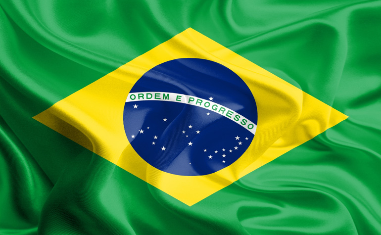

Brasilien ist der flächen- und bevölkerungsmäßig fünftgrößte Staat der Erde. Es ist das größte und mit über 200 Millionen Einwohnern auch das bevölkerungsreichste Land Südamerikas, von dessen Fläche es 47,3 Prozent einnimmt. Brasilien hat mit jedem südamerikanischen Staat außer Chile und Ecuador eine gemeinsame Grenze.  Die ersten Spuren menschlicher Besiedlung durch Paläo-Indianer reichen mehrere tausend Jahre zurück. Nach der Entdeckung Amerikas und der Aufteilung des südamerikanischen Kontinents durch den Vertrag von Tordesillas wurde Brasilien eine portugiesische Kolonie. Diese mehr als drei Jahrhunderte andauernde Kolonialzeit, in der Einwanderer verschiedenster Herkunft (freiwillig oder gezwungenermaßen) nach Brasilien kamen, trug erheblich zur ethnischen Vielfalt des heutigen Staates bei. Nach der im Jahre 1822 erlangten Unabhängigkeit, auf die eine Zeit der konstitutionellen Monarchie folgte, wurde das Land 1889 als Vereinigte Staaten von Brasilien zu einer Republik. Nach der Zeit der Militärdiktatur von 1964 bis 1985 kehrte das Land zur Demokratie mit einem präsidentiellen Regierungssystem zurück. Der Name Brasilien geht auf den portugiesischen Namen pau-brasil des Brasilholz-Baumes (Caesalpinia echinata), der ein wichtiges Ausfuhrprodukt zur Zeit der frühen Kolonisation aus den Wäldern der Atlantikküste war, zurück. Brasa bedeutet im Portugiesischen „Glut“ und „glühende Kohlen“; das Adjektiv brasil („glutartig“) bezieht sich auf die Farbe des Holzes, das, wenn geschnitten, rot leuchtet (Brasilin) und in Europa zum Färben von Stoffen benutzt wurde. (Quelle: www.wikipedia.org)
Reisezeitraum:
Reiseroute:
Rondônia in den 1970er-Jahren:
(C) Mag. Lukas Kindl, BA - 2016